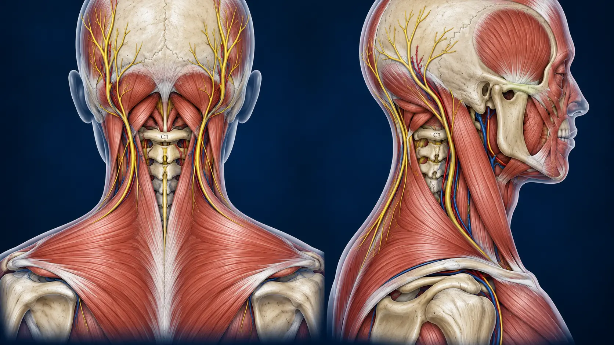
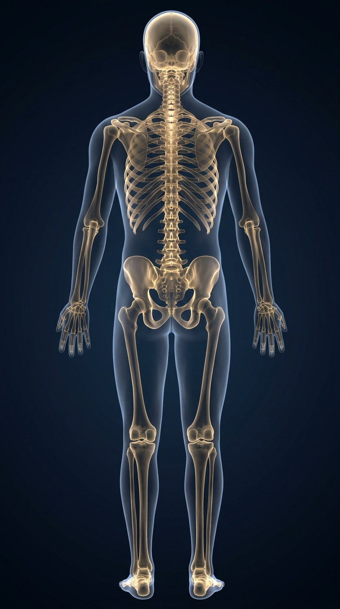
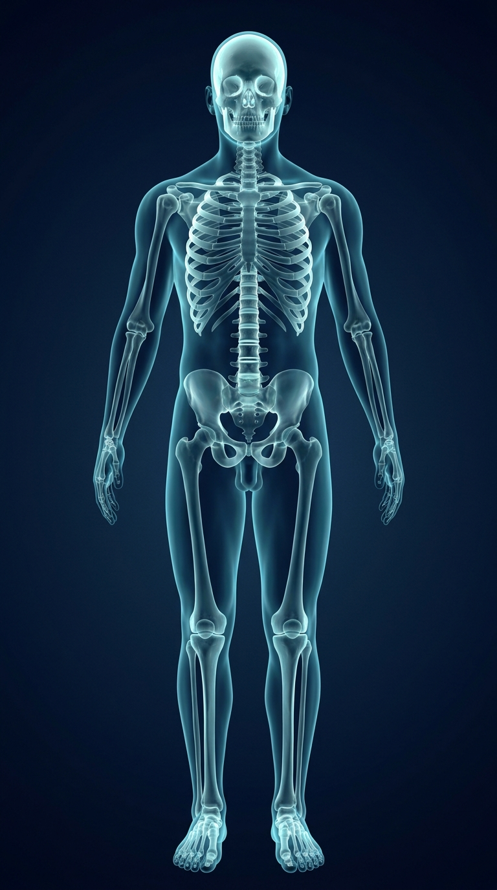

NovaCell 회원 이용권을 확인하고 있습니다...



선택한 포인트 · 위치 확인 후 사용
High-Voltage & Microcurrent Clinical Guide System
독자적인 무극성 고전압 미세전류(High-Voltage & Microcurrent) 기술과 해부 참고 이미지와 포인트 기록을 결합한 작업 화면입니다. 위치를 검토하고 타이머를 설정할 수 있습니다.
선택하신 질환 및 회로 프로토콜은 1년 정기 이용권 전용입니다.